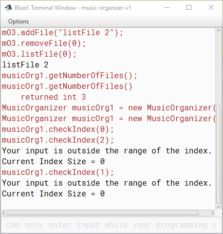
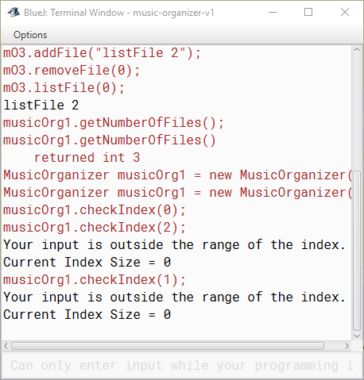
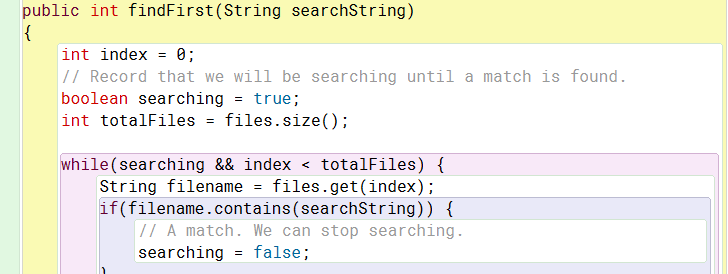

Exercise 4.1
Exercise 4.2
some feedback. This is particularly true in cases where something unexpected happens.
Exercise 4.3
Well if this is anything like python I imagine that my items are put into a list.
When the first item is removed the list should shift left, as now their position in the list
is one less.
Exercise 4.4
Exercise 4.5
Exercise 4.6
Exercise 4.7
library = new ArrayList<>();
or
library = new ArrayList();
cs101 = new ArrayList<>();
cs101 = new ArrayList();
tracks = new ArrayList<>();
tracks = new ArrayList();
Exercise 4.8
The answer should be 3.
Exercise 4.9
public void itemName(int index)
{
if(index >= 0 && index < files.size()){
String filename = item.get(index);
System.out.println(filename);
}
}
Exercise 4.10
The answer is 14.
Exercise 4.11
public void addFavorite(String favoriteTrack)
{
files.add(favoriteTrack;)
}
Exercise 4.12
dates.remove(2);
Exercise 4.13
Exercise 4.14
 

Exercise 4.15
Exercise 4.16
Exercise 4.17
Incorrect filename = There was a problem playing: (filename)
Outside of Index = Exception occurred.
Exercise 4.18
Exercise 4.19
currentIndex = indexMin;
if(indexMin >= 0){
System.out.println(files.get(indexMin));
currentIndex =+ 1;
}
else{
System.out.println("Index size cannot be less than zero.");
}
while(currentIndex <= indexMax){
System.out.println(files.get(currentIndex));
currentIndex =+ 1;
if currentIndex == indexMax;{
break;
}
}
Exercise 4.20
Exercise 4.21
Exercise 4.22
Exercise 4.23
Exercise 4.24
Exercise 4.25
Exercise 4.26
Exercise 4.27
Exercise 4.28
Exercise 4.29
Exercise 4.30
Exercise 4.31
Exercise 4.32
Exercise 4.33
Exercise 4.34

Exercise 4.35

Exercise 4.36
Exercise 4.37
Exercise 4.38
Exercise 4.39
Exercise 4.40
Exercise 4.41
Exercise 4.42
Exercise 4.43
Exercise 4.44
Well considering that we can make lists of artists/titles or whatever set up the array and then use random to make a new list
For Equal Plays: You can set up a condition that checks for the lowest play count and then picks only from those songs.
To favor favorites: You could use the play count to make an array of your favorite songs then use the random feature
Exercise 4.45
Exercise 4.46
Exercise 4.47

Exercise 4.48

Exercise 4.49
Exercise 4.50
if the lot removed was somewhere in the middle.
Exercise 4.51
Exercise 4.52
Exercise 4.53
- ArrayLists are all listed sequencally in the computers memory.
This allows them to be easier to find and requires less memeory to store. - Linked lists give each object the location of the next object, meaning they can be stored anywhere.
This is easier for adding and deleting items, but can cost more time as it has to find each item sequentially until it locates the item you want.
Exercise 4.54
Exercise 4.55
I couldn't figure out how to make this one work without a break statement.
The problem was that if I removed all members and the for loop continued it would error.
I guess I could have made a while loop with that condition, but that's now how I soled the problem.
Exercise 4.56
Exercise 4.57
Exercise 4.58
Exercise 4.59
Exercise 4.60
There seems to be a gap of about 24 numbers here. My book pages don't have a gap so I don't know what the deal is. Misprint?